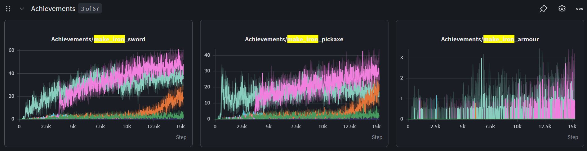
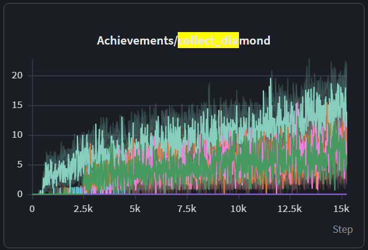
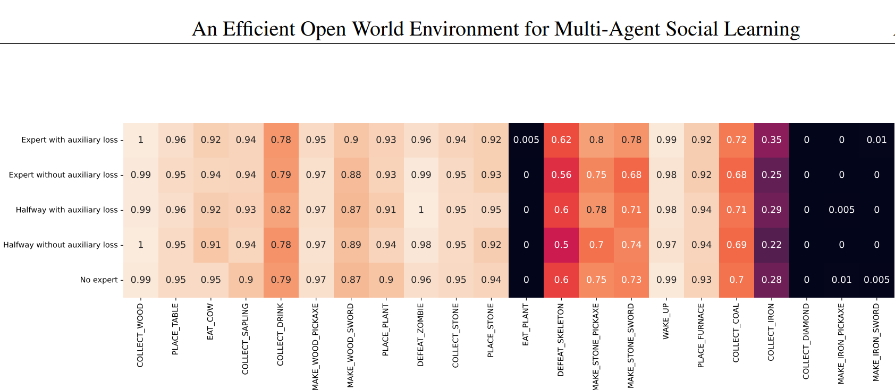
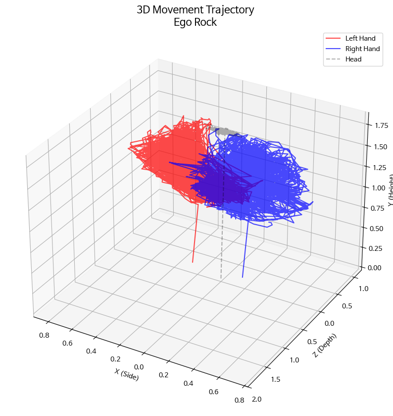

Overview
This project started from a repository that described a diffusion, mixture-of-experts, vision-language agent for Minecraft-like worlds, but whose environment returned random pixels and ignored every action. It became three tested pipelines: an LLM planner in the Describe, Explain, Plan and Select style on a symbolic tech tree, MoE and diffusion policies on Crafter pixels in PyTorch, and a pure-JAX Craftax trainer built to reproduce 1B-step reference runs.
What this page claims is modest. On a 4-core CPU all three pipelines learn, give the same result for the same seed, and pick up bit-for-bit after an interruption. Matching the reference end-of-training numbers takes a GPU run, which is one command here.
The audit, environments, agents, training infrastructure, 68 automated tests and this page all live in one repository.
Key Results
Symbolic tech-tree world
Replaced the random-pixel environment with a Gymnasium tech tree in which tools, tables, furnaces and fuel are enforced. The default tasks went from 0/6 to 6/6 (wooden slab in 3 steps, diamond in 34), and stayed at 6/6 with 30% random action failures through replanning.
An agent cannot be evaluated until the world responds to its actions. The first test of any setup is whether a scripted policy can solve it.
Quantity-aware Describe, Explain, Plan and Select loop
A plan that skips steps fails after the 5-replan budget when the controller only executes the chosen sub-goal, and succeeds when the controller gathers prerequisites. This ablation separates plan quality from control quality.
"Have planks" is not "have three planks". Sub-goals have to complete when an item is obtained, not when it happens to be present.
MoE PPO on Crafter pixels
A CNN encoder with a 4-expert, top-2 MoE trunk raised the Crafter score from 1.56 (random) to 4.63 after 100k CPU steps (about 3×); return went from 1.25 to 3.60.
A random baseline that matches the published ~1.6% validates the metric code before any learning claim is made.
Diffusion behaviour cloning
A diffusion policy cloned from PPO demonstrations reached a score of 3.56 and return 3.55 (teacher 3.60). Switching to clean-sample prediction gave 40/40 exact action-chunk matches on the conditioning test.
A low diffusion loss does not mean the model uses its condition. For one-hot targets, epsilon-prediction barely constrains the clean sample at high noise.
Craftax in JAX
Environment and PPO are jitted together with optimistic resets: about 1,200 steps/s on 4 CPU cores (reference GPU runs: 50k–95k). PPO return rose from 1.49 to 6.66 in 6.55M steps with the baseline config.
World generation dominates the cost of a Craftax step, so resets have to be pooled rather than paid by every environment.
Determinism and resume
One uninterrupted run vs. 5-update checkpointed chunks resumed across processes: 0 of 390 logged values differ. Same-seed reruns are bit-identical for PPO and PPO-RNN.
Resumable runs turn "the run died" into "re-run the command"; 8 of the 10 reference runs ended in a failed state.
System Architecture
Fig 2. Three tracks sharing one repository and one evaluation vocabulary (tasks, achievements, success rates).
Tech Stack
| Category | Technologies |
|---|---|
| Language | Python 3.9+ |
| Planning | LLM through an OpenAI-compatible endpoint (local models), rule-based fallback planner |
| Environments | Gymnasium (symbolic tech tree), Crafter, Craftax (JAX) |
| Deep learning | PyTorch (Crafter policies); JAX, Flax, Optax, Distrax (Craftax) |
| Models | CNN / ViT encoders, HuggingFace CLIP / SigLIP (optional), top-k MoE, DDPM diffusion policy, GRU, ICM, trajectory transformer |
| Configuration | Hydra, OmegaConf |
| Monitoring | Weights & Biases, JSONL metrics |
| Testing | pytest (68 tests), Playwright (this site) |
Training Environment
The same agent stack is measured on three environments of increasing difficulty. Each reports success per task or per achievement, so results stay comparable across them.
| Environment | Observation | Actions | Success signal |
|---|---|---|---|
| Symbolic tech tree | Inventory vector (19 items) + placeholder RGB | 20 macros (mine / craft / smelt + noop) | Target item in inventory |
| Crafter | 64 × 64 × 3 pixels | 17 discrete | 22 achievements; score = geometric mean of success rates |
| Craftax-Symbolic-v1 | 8,268-dim symbolic vector | 43 discrete | ~65 achievements across dungeon floors |
Tech-tree rules
Mining needs the right tool (cobblestone and coal need a wooden pickaxe, iron needs stone, diamond needs iron). Crafting consumes ingredients and may need a crafting table. Smelting needs a furnace and consumes one coal. A task succeeds when its target item reaches the inventory, and an episode is truncated after max_steps.
Craftax PPO configuration
| Parameter | Value | Note |
|---|---|---|
| Parallel environments × rollout | 1024 × 64 | 65,536 steps per update; 15,258 updates = 1e9 steps |
| Learning rate (annealed) | 2e-4 | Adam, gradient clip 1.0 |
| γ / GAE λ | 0.99 / 0.8 | |
| Epochs × minibatches | 4 × 8 | PPO-RNN minibatches whole sequences by environment |
| Network | 3 × 512 tanh | PPO-RNN: 512 embedding → GRU → heads |
| Optimistic reset ratio | 16 | 64 fresh worlds per step for 1024 envs |
| ICM bonus scale | 0.01 | Bonus divided by the running mean of the error first |
Score and bonus definitions
# Crafter score: geometric mean of achievement success rates s_i (in %)
score = exp(mean_i ln(1 + s_i)) - 1
# ICM bonus (per step), normalised so it cannot swamp sparse task rewards
r = r_extrinsic + 0.01 * forward_error / running_mean(forward_error)Key Features
1. Tech-tree environment and Describe, Explain, Plan and Select loop
The planner proposes a plan, a parser turns it into sub-goals (Mine cobblestone x6), a selector picks the next one, and the controller acts. Repeated failures, or a sub-goal that takes too long, trigger a replan that includes the inventory and the error message. Every rule lives in one pure function, so the environment, the controller's prerequisite search and the rule-based planner all share it.
def apply_action(inventory, verb, item):
if obtain_method(item) != verb:
return dict(inventory), False, f"cannot {verb} {item}"
tools, consumed = action_requirements(verb, item)
missing = {req: amount - inventory.get(req, 0)
for req, amount in {**tools, **consumed}.items()
if inventory.get(req, 0) < amount}
if missing:
desc = ", ".join(f"{n} {k}" for k, n in missing.items())
return dict(inventory), False, f"cannot {verb} {item}: missing {desc}"
new_inv = dict(inventory)
for req, amount in consumed.items():
new_inv[req] -= amount # tools are required but not consumed
new_inv[item] = new_inv.get(item, 0) + output_quantity(verb, item)
return new_inv, True, ""2. Mixture-of-experts trunk
Top-k noisy gating routes each observation embedding to two of four MLP experts. A Switch-style load-balancing loss (1.0 when balanced, E when collapsed) keeps experts in use, and per-layer expert load is logged during training. model.trunk=mlp gives the dense ablation.
probs = logits.softmax(dim=-1) # (B, E)
top_vals, top_idx = probs.topk(self.top_k, dim=-1) # (B, k)
weights = top_vals / top_vals.sum(dim=-1, keepdim=True)
expert_out = torch.stack([e(x) for e in self.experts], dim=1)
chosen = expert_out.gather(1, top_idx.unsqueeze(-1).expand(-1, -1, x.shape[-1]))
y = (weights.unsqueeze(-1) * chosen).sum(dim=1)
load = F.one_hot(top_idx[:, 0], self.num_experts).float().mean(0)
aux_loss = self.num_experts * (load * probs.mean(0)).sum()3. Diffusion policy over action chunks
An 8-step action chunk is a one-hot (H × A) tensor scaled to [-1, 1]. A FiLM-conditioned denoiser predicts the clean chunk from the noisy one, the diffusion step and the image embedding. At run time the policy samples a chunk with 10 strided DDIM steps, executes the first 4 actions and resamples.
x0 = self.encode_actions(actions) # one-hot * 2 - 1
t = torch.randint(0, self.num_diffusion_steps, (x0.shape[0],))
noise = torch.randn_like(x0)
ab = self.alphas_bar[t].view(-1, 1, 1)
x_t = ab.sqrt() * x0 + (1 - ab).sqrt() * noise
pred = self.denoiser(x_t, t.float(), self.encoder(obs))
return F.mse_loss(pred, x0 if self.prediction_type == "sample" else noise)4. Craftax trainer in JAX
Environment stepping, GAE and PPO updates run inside jax.lax.scan under one jit. Finished environments draw from a small pool of freshly generated worlds instead of generating one each. Training advances in checkpointed chunks that save the full state (parameters, optimizer, environment states, RNG), so a re-run continues exactly where it stopped.
obs_re, state_re = jax.vmap(self._env.reset_env, in_axes=(0, None))(
jax.random.split(key_reset, self.num_resets), params) # num_envs / 16 worlds
rank = jnp.cumsum(done) - 1 # distinct worlds for done envs
pick = jnp.where(rank < self.num_resets, rank,
jax.random.randint(key_pick, (self.num_envs,), 0, self.num_resets))
state = jax.tree.map(select, state_re, state_st)while next_update < stop_at:
num = min(chunk, stop_at - next_update)
runner, _ = jax.block_until_ready(train.run_updates(runner, next_update, num))
next_update += num
save_runner(ckpt_path, runner, next_update)Problem Solving
Problem 1: An agent that could never succeed
Every benchmark task ended at step 999 with success: false, and the full benchmark crashed after the first task.
The environment returned np.random.randint pixels and its action handler was a pass, so the inventory never changed. On top of that, the fallback planner matched wooden_slab inside its own prompt template and returned the slab plan for every task, plan text was split on a literal backslash-n, and the logger called an attribute that did not exist.
A world in which success is possible and measurable before any learning is added.
- Symbolic tech-tree environment with Gymnasium API, enforced tools and ingredients.
- Quantity-aware rule-based planner; event-based sub-goal completion; replanning with inventory and error context.
- Fixes to config keys, parsing, logging and data loading; package layout and tests.
0/6 → 6/6 default tasks; 6/6 with 30% random action failures; 34 unit tests on the planner path.
Problem 2: The diffusion policy ignored its observation
Training loss fell, but the sampled action chunk was nearly identical for a dark and a bright image that should map to different chunks.
With epsilon-prediction, the loss at high noise levels barely depends on recovering the clean one-hot chunk, so the sampler's early, decisive steps were barely conditioned.
Observation-dependent action chunks for both full DDPM and strided DDIM sampling.
Predict the clean sample (x0) and derive the noise from it during sampling; keep epsilon-prediction as an option.
40/40 exact matches after 400 training steps on the conditioning test (correct from step 100); diffusion BC on Crafter scores 3.56 against the 4.63 PPO teacher.
Problem 3: Results far below the reference charts
The Crafter PPO run had 0% EAT_PLANT and no iron tools, while the reference charts showed iron swords and diamonds.
The reference runs are Craftax-Symbolic (symbolic observations, ~65 achievements) at 1e9 steps and 50k–95k steps/s on a GPU, and their x-axis counts PPO updates: 1e9 / (1024 × 64) ≈ 15,258. The local run was Crafter pixels at 1e5 steps, a different environment with 10,000× less data.
A pipeline that runs the reference setup as-is and can be checked against it.
Pure-JAX PPO / PPO-RNN on Craftax with the baseline configuration, plus compare_craftax_run.py and a reference file with 70 end-of-training ranges read off the charts.
On CPU the early learning order matches the reference (basic achievements saturate first, then the wood and stone tools); the 1e9-step comparison is one GPU command away.
Problem 4: Runs dying mid-training
A 100-update CPU run was stopped by a session time limit at update ~32; 8 of the 10 reference runs also ended in a failed state.
The whole training loop ran as one jitted scan with no state saved until the end.
Interrupted runs continue with exactly the same results as uninterrupted ones.
Split training into jitted chunks of N updates and save the complete runner state after each one; re-running the same command restores it. max_updates_per_run stops deliberately for time-limited jobs.
0 of 390 logged values differ between one uninterrupted scan and 5-update chunks resumed across processes; a unit test checks parameters are bit-identical.
Problem 5: Curiosity reward swamped the task
In the reference ICM run, the intrinsic reward climbed to ~7.5 per step while the extrinsic reward stayed near 0, and even PLACE_TABLE dropped to 0%.
An unscaled forward-model error was added to a sparse task reward, so the agent optimised novelty only.
An exploration bonus whose average contribution is fixed and small relative to task rewards.
Divide the bonus by its running mean (so it averages 1) and scale it by 0.01. Dividing by the standard deviation was tried first and left a mean of ~12, because a squared error is mostly mean.
The normalized bonus averages 0.01 per step, about 5 per typical episode against a task return above 20 at convergence. Whether this actually prevents runaway and helps exploration has not been tested with a controlled run yet (see Experiment Design).
Empirical Analysis
Craftax-Symbolic-v1: episode return in the first millions of steps
Baseline config (1024 envs × 64 steps, lr 2e-4), single seed, 4-core CPU. Reference runs reach ~26 (PPO) and ~37 (PPO-RNN) at 1e9 steps.
Craftax-Symbolic-v1: first achievements (PPO)
Success rate per finished episode. Basic achievements saturate first and the wood/stone tool chain follows, as in the reference curves.
PPO vs. PPO-RNN at 3.28M steps
| Metric | PPO | PPO-RNN |
|---|---|---|
| Episode return | 5.47 | 5.15 |
| Achievements per episode | 6.37 | 6.05 |
| PLACE_TABLE (%) | 92.3 | 84.1 |
| MAKE_WOOD_PICKAXE (%) | 39.4 | 19.3 |
| EAT_COW (%) | 28.1 | 18.4 |
| COLLECT_DRINK (%) | 43.0 | 59.0 |
| COLLECT_STONE (%) | 2.3 | 4.2 |
Interpretation scope
These are single-seed runs covering 0.3–0.7% of the reference budget. They show that both models learn the expected early achievements in the expected order; the reference PPO-RNN advantage builds over hundreds of millions of steps and is not visible yet.


Results
Crafter score (higher is better)
Geometric mean of 22 achievement success rates, 20 evaluation episodes on the same worlds.
Planner: environment steps to solve each task
Rule-based planner, default configuration; all six tasks succeed.
Key Metrics Summary
| Metric | Value | Meaning |
|---|---|---|
| Planner tasks | 0/6 → 6/6 | The environment and Describe, Explain, Plan and Select loop are functional end to end |
| Crafter score | 1.56 → 4.63 | MoE PPO learns from pixels within 100k steps |
| Craftax return (PPO) | 1.49 → 6.66 | Baseline config learns on CPU in 6.55M steps |
| Resume equivalence | 0 / 390 differ | Runs can be interrupted without changing results |
| Automated tests | 68 pass | Core, Crafter (PyTorch) and Craftax (JAX) paths |
Embodied signal: 3D trajectories
A transformer encoder embeds multi-joint 3D trajectories (hands and head) with velocities and a continuous-time embedding of irregular timestamps. It plugs into the MoE policy as an optional input; on synthetic motions it separates four activity classes with >90% accuracy after 150 steps.
Data format: positions (N,T,J,3), timestamps (N,T), optional mask and labels.

Experiment Design
Problem 5 fixed the curiosity bonus by dividing it by the running mean of the error. Nobody has yet checked, with a controlled run, whether that actually stops the bonus from running away or actually helps exploration. So there are two separate questions.
- H1. Bounded bonus: does the mean-normalized bonus stay at a steady size through training, while an unnormalized or std-normalized bonus takes over the reward?
- H2. Better exploration: does mean-normalized ICM reach more kinds of achievements than PPO without curiosity, without lowering the extrinsic return?
Arms
Same Craftax-Symbolic-v1 PPO baseline config and seeds everywhere. The ICM arms also share the bonus coefficient (0.01), so normalization is the only difference.
| Arm | Bonus per step | Expectation |
|---|---|---|
ppo | none | baseline |
icm_none | 0.01 · e | takes over the reward when the raw error is large |
icm_std | 0.01 · e / std(e) | still too large: a squared error is mostly mean |
icm_mean | 0.01 · e / mean(e) | current default; averages 0.01 |
icm_ema | 0.01 · e / EMA(e) | follows the error down as the forward model improves (decay 0.99 per update) |
e is the ICM forward-model error of each transition.
What is measured
- Runaway: the bonus share of the total |reward| (
icm/bonus_share) and the mean bonus per step. A run counts as runaway if the share is still above one half over the last 10% of training, or if the bonus grew more than 2×. Early updates are left out: the extrinsic reward is close to zero there, so even a well-scaled bonus is most of the reward. - Exploration: achievement types reached at least once, the Craftax score (geometric mean of success rates), achievements per episode.
- Task performance: episode return from the extrinsic reward only.
Decision rules
- Every arm is compared with
ppoon the same seed. Runs shorter than 5·10⁷ steps get no verdict. - H1 holds if
icm_meannever runs away on any seed whileicm_noneoricm_stddoes. If no control runs away either, the answer is "inconclusive". - H2 holds if, over at least 3 seeds, achievement types reached or the Craftax score beat
ppoon every seed, and the extrinsic return is not lower on every seed.
Running it
python run_icm_ablation.py # GPU: 5 arms x 3 seeds x 1e9 steps
python run_icm_ablation.py --steps 2e8 --arms ppo icm_mean icm_std # quicker first look
python run_icm_ablation.py --preset cpu-debug # CPU: pipeline check onlyOn one GPU that is 3–4 hours per run, about 50 hours for all 15. The tables and verdicts end up in runs/icm_ablation/report.md. The CPU preset trains a tiny network for 12 updates to check that the code runs end to end; its numbers say nothing about the hypotheses.
run_icm_ablation.py, analyze_icm_ablation.py.Miscellaneous Trials & Errors
1. Normalising curiosity by its standard deviation
The first ICM fix divided the bonus by its running standard deviation. The bonus still averaged ~12 per step, because a squared prediction error is mostly mean, not variance. Dividing by the running mean fixed the scale.
2. CPU oversubscription
Running the test suite next to a Crafter PPO run dropped training from ~80 to 15 steps/s: eight environment processes and two PyTorch thread pools competed for four cores. A torch_threads option now leaves cores for environment workers.
3. Reading the reference charts
The first comparison read the W&B "Step" axis as environment steps. It counts PPO updates; matching 15k updates to 1e9 steps is what identified the batch size of the reference runs.
Future Plans
Full-scale reproduction
- Run the 1e9-step PPO and PPO-RNN comparison on a GPU (3–4 hours per run) over 2–3 seeds and check it with
compare_craftax_run.py. - Run the ICM normalization experiment below on a GPU to answer its two questions.
Models
- Port the diffusion policy to the JAX path and compare MoE vs. dense trunks at scale.
- Use the learned policies as low-level skills under the Describe, Explain, Plan and Select planner.
- Connect real IMU recordings in the trajectory format.